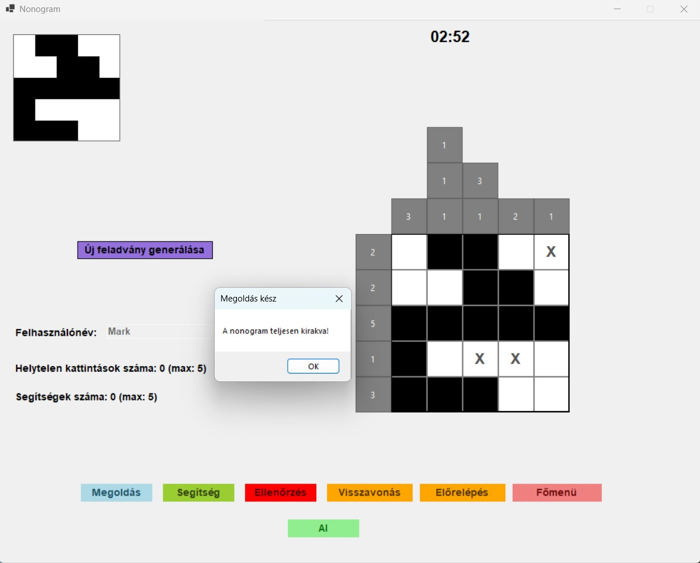
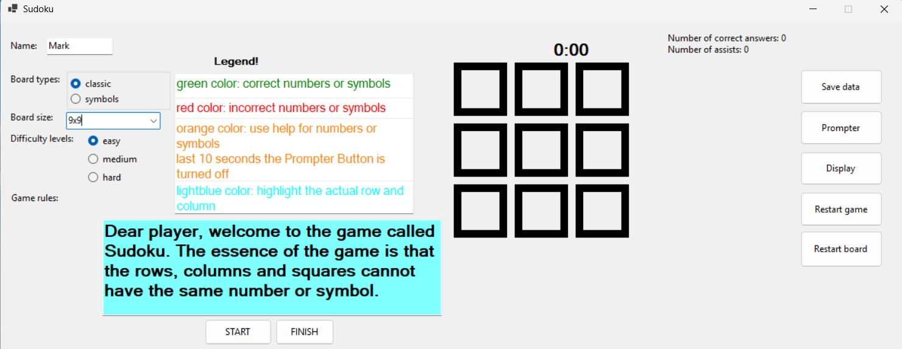
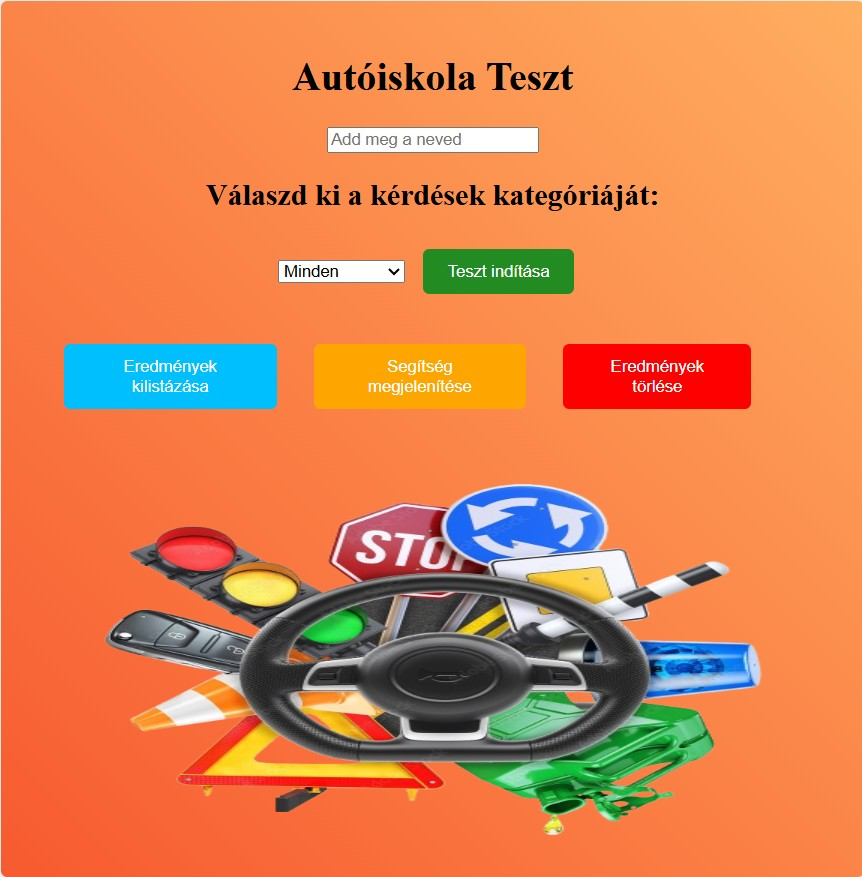
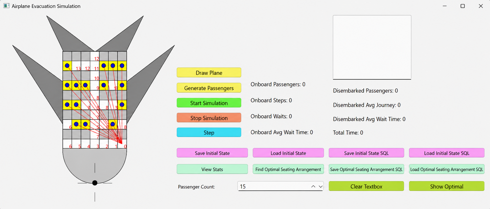

Kezdő szoftverfejlesztő vagyok, aki a programozás több területén is szeretne fejlődni.
Jelenleg a webfejlesztés mellett foglalkozom Python, Java és C# alapokkal.
Célom, hogy átfogó tudást szerezzek különböző programozási nyelvekben és technológiákban.
Szeretem a problémamegoldást és motivál, hogy jól strukturált kódot írjak.
Szabadidőmben gyakorlok és projekteket készítek.
-

Grafilogika alkalmazás
A bakalármunka célja egy olyan alkalmazás létrehozása, amely grafologikus (nonogram, japán keresztrejtvény) típusú rejtvényeket generál és
támogatja azok megoldását. Az alkalmazás képes feladatok létrehozására, azok vizuális megjelenítésére, valamint interaktív megoldási lehetőséget,
hibakeresést és a helyes megoldás ellenőrzését biztosítja.
-

Készségfejlesztő logikai játék
A diplomamunka célja egy egyszerű logikai játék, a Sudoku létrehozása, amely különböző nehézségi szinteken játszható.
Probléma esetén adj javaslatot egy lehetséges jó lépésre büntetőpontért cserébe. A játék végén a játék értékeli és rangsorolja a játékost a
helyes lépések száma és az eltelt játékidő alapján.
-

Autóiskola projekt
Ez a projekt az alapvető webfejlesztési koncepciók és az adminisztratív stílusú adatkezelés elsajátítására és gyakorlására készült.
-

Repülőgép projekt
Ez a projekt algoritmikus problémamegoldás vizsgálatára szolgál közlekedési rendszerekben, különös tekintettel a C++ használatával
történő optimalizálásra és ütemezésre.

 Jedlik Ányos Elektrotechnikai Szakközépiskola – Érsekújvár (2015.09.01 – 2019.06.30)
Jedlik Ányos Elektrotechnikai Szakközépiskola – Érsekújvár (2015.09.01 – 2019.06.30)